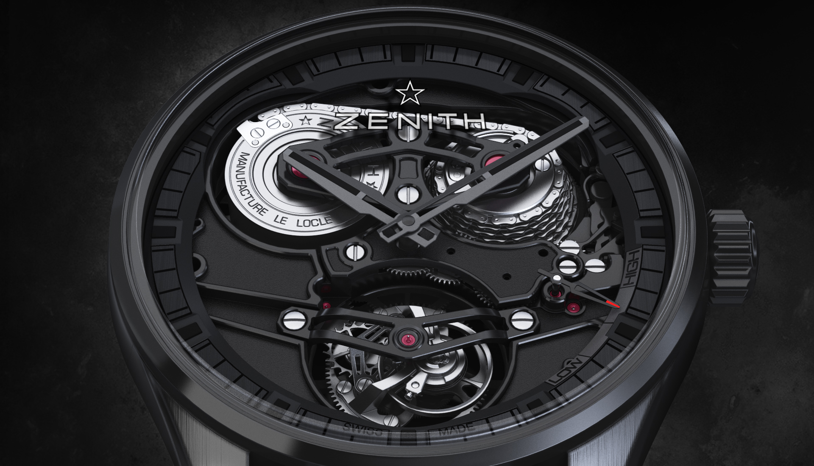
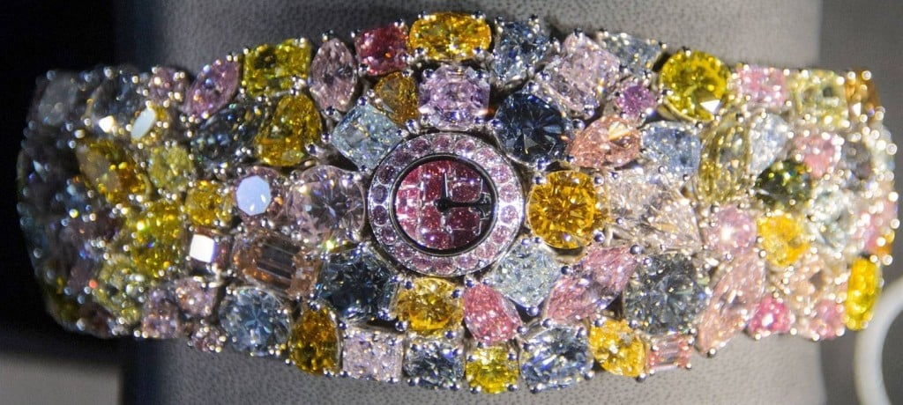

- Dragon Automaton / Bird Repeater Alpine View
- 300,000 долларов США / 525,000 долларов США
- це унікальне поєднання мистецтва і техніки, створене у співпраці з канадським ілюстратором Джоном Хоу. Хоу відомий своїми роботами для фільмів «Володар перснів» і “Гоббіт”, і його дизайн для цього годинника натхненний фентезі всесвіту - це унікальне поєднання мистецтва і техніки, створене у співпраці з канадським ілюстратором Джоном Гоу. Хоу відомий своїми роботами для фільмів «Володар перснів» і «Гоббіт», і Nero дизайн для цього годинника натхненний фентезі всесвіту Translated with DeepL.com
- Цей годинник включає дев'ять механічних анімацій, таких як рух хвоста, відкриття і закриття очей і щелепи, рух язика, підняття й опускання гребеня, а також захоплення каменю, який постійно обертається. Годинник виконано у вигляді дракона, який має вигляд живої істота
- Цю колекцію було створено протягом UpBox років. років і являє собою високоунікальний витвір мистецтва, який можна налаштувати за бажанням клієнта. Годинники виконані в золоті й можуть бути індивідуально прикрашеним. Якщо вам цікаво дізнатися більше, ви можете відвідати официальный сайт Jaquet Droz.

- Zenith Academy Zero-G Tourbillon 18.1260.8801/02.C505
- 51,500 долларов США / 49,626 Євро
- является частью линейки Zenith Academy, яка була розроблена для створення годинників, що поєднують високу точність і естетичну цінність. Цей годинник виконано з рожевого золота й оснащений автоматическим заводним механізмом. Особливістю цієї моделі є використання технології Tourbillon, яка допомагає компенсувати вплив гравітації на точність ходу годинника. Ця технологія була винайдена Бреге у XVIII столітті. BAKE і досі залишається однією з найбільш складних і унікальних у світі годинникової майстерності.
- Zenith або відвідати їх официальный сайт для отримання інформації про придбання цього годинника

- Graff Diamonds Hallucination
- 55,000,000 долларов / 52,398,418 Євро
- відома британська міжнародна ювелірна компанія, заснована Лоуренсом Граффом у 1960 році. Лоуренс Графф, якого часто називають "Королем діамантів", розпочав свою кар'єру учнем у panose Хаттон Гарден в Лондоні і швидко здобув популярність завдяки своїм винятковим навичкам і пристрасті до діамантів. Протягом років Graff Diamonds стала синонімом розкоші та досконалості у ювелірних виробах та годинниках
- Якщо ви хочете придбати ювелірні вироби або годинники від Graff Diamonds, ви можете відвідати їхній офіційний вебсайт або один з флагманських магазинів, розташованих у таких містах, як Лондон, Нью-Йорк, Женева, Гонконг і Токіо. Деякі магазини розкішних ювелірних виробів та авторизовані дилери також можуть мати продукцію Graff Diamonds.